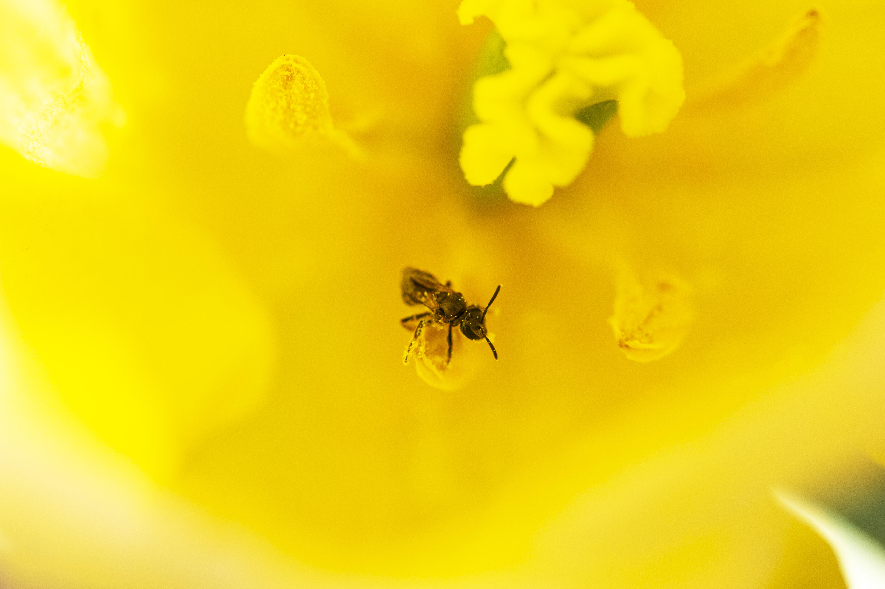
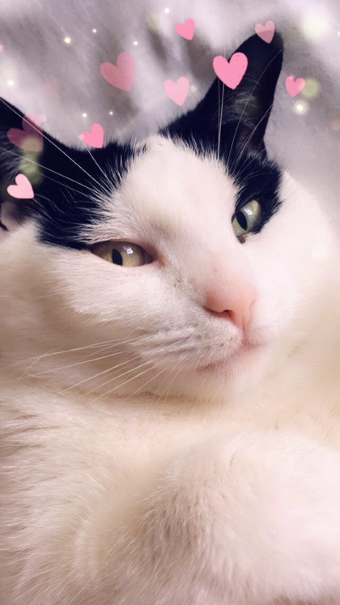
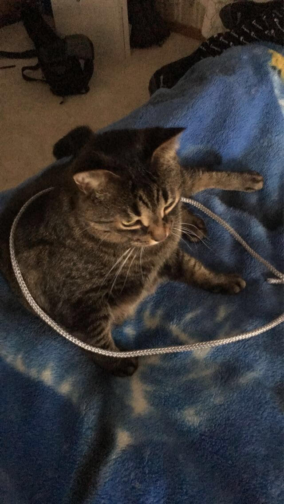
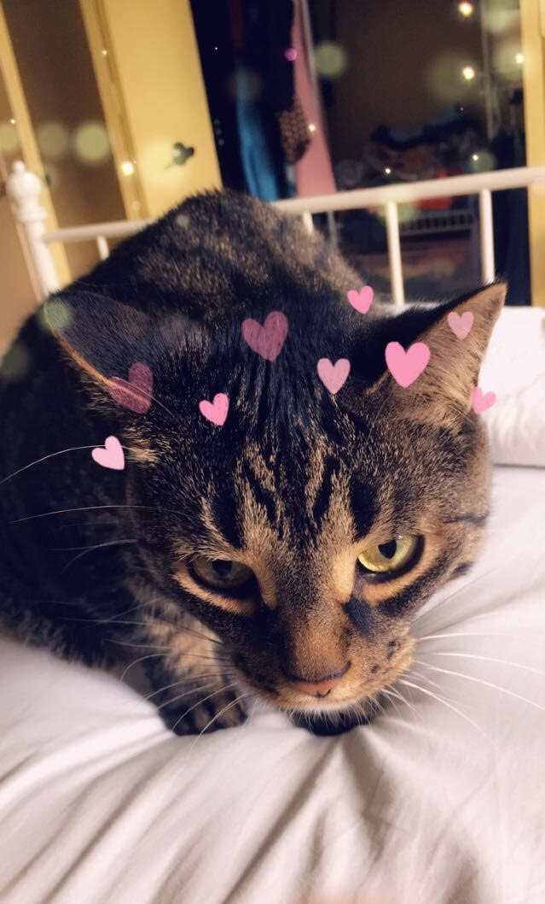
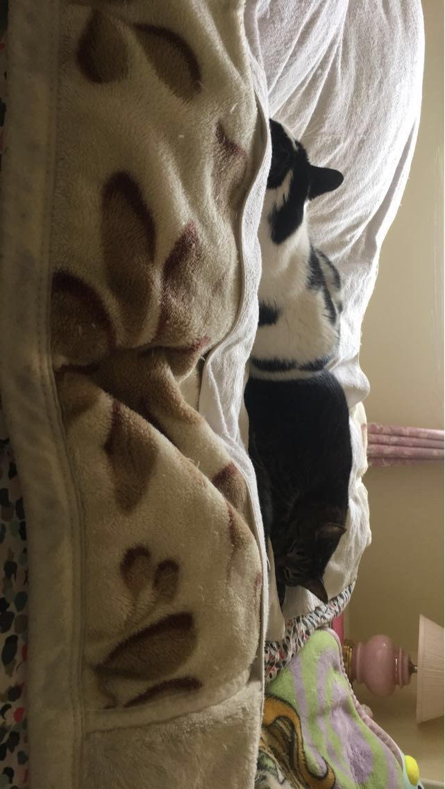
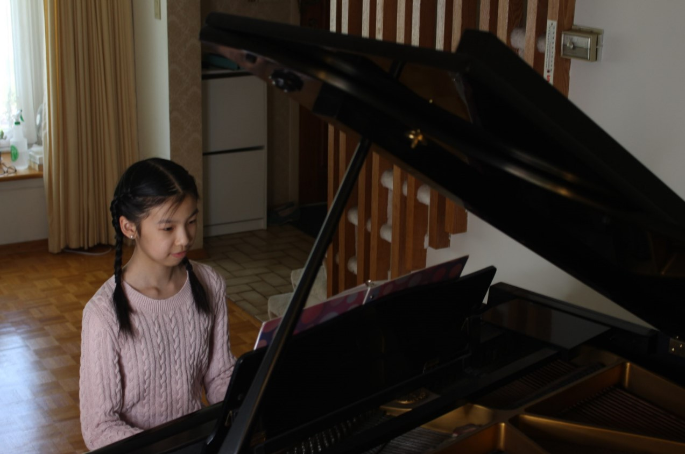
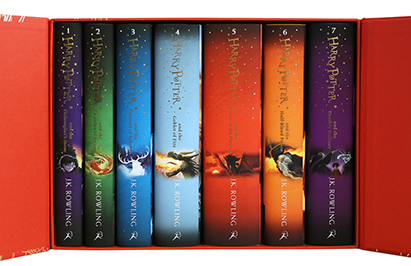

Homepage Basic Facts About Pearl Dance Legislative Page Program References

Random Facts:
Favourite colour: light, pastel blue/green (hover over me!)
Elementary/middle school: Claude Watson School for the Arts
Birthdate: June 29, 2006
Zodiac sign: cancer
Least favourite food: tomatoes
Family Members: Mom, Dad, Alvin(brother), Maya (kitty #1), Poppy (kitty #2)
My brother is eighteen–years–old and in his first year studying at Ryerson University. He studies photography
and always helps me retake my clumsily taken photos on my phone. Below some of his works.

My family has had pretty much every pet you could think of from dogs to hamsters, to birds, and bunnies.
My first cat, Maya, is a black and white cat who is five–years–old. She is a bit of a scaredy–cat and always
has to follow me around wherever I go in the house. She is slim and elegant, unlike my other cat, Poppy. He is three–years–old
and loves to play, eat, and sleep. Below are some photos of them.




Hobbies: dancing, playing piano, reading
My favourite task to do in my free time is to dance. You can read all about my experiences here.
I have been playing piano since the age of six. Over the past year, I have finished my level 10 practical exam and my level 10
Harmony and Counterpoint theory exam. For now, I am going to take a pause with lessons and only play in my spare time.

During my free time, I also enjoy reading. Over quarantine, I finally decided to read the Harry Potter series to see
what all the fuss was about. After finishing all seven books and movies, I officially understand why it is such a popular book
series and fell in love with it myself. I am mainly an audio learner, so I found that listening to an audiobook helps me get through
books much more quickly.
